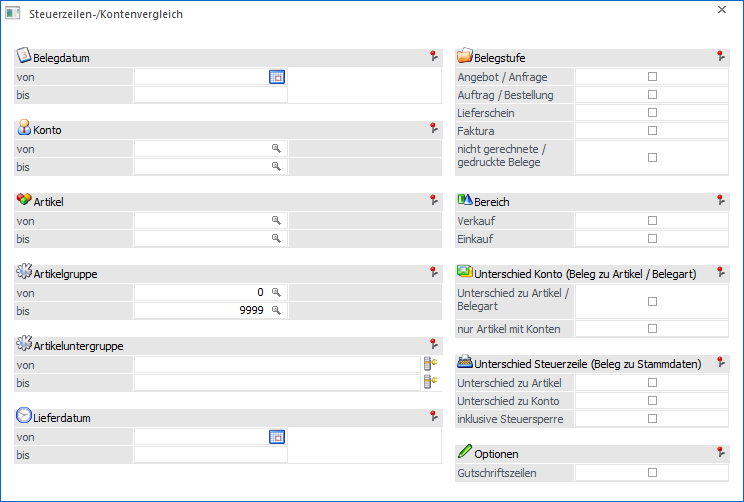
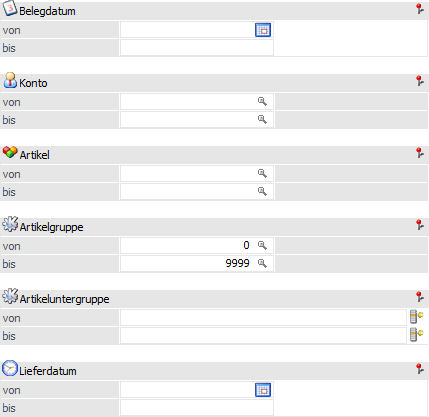
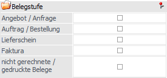
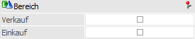
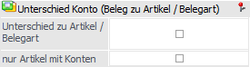
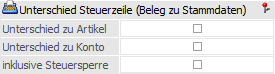
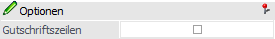
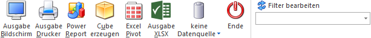

In der WinLine Start steht über den Menüpunkt
1 Abschluss
1 MwSt-Umstellung
1 Steuerzeilen-/Kontenvergleich
ein Programm zum Abgleich steuerrelevanter Belegdaten zur Verfügung (z.B. der Unterschied "Konten/Beleg" zu "Konten/Artikelstamm bzw. Belegart"). Hierdurch ist bei einer Steuerumstellung eine schnelle Prüfung auf eventuell nicht umgestellte Belege (bezogen auf Steuerzeile und Sachkonten) möglich.

Selektion

Im Bereich "Selektion" können Einschränkungen für eine detailliertere Auswertung vorgenommen werden.
Ø Belegdatum von / bis
Einschränkung des Belegdatums, welches ausgewertet werden soll.
Hinweis
Bei Belegen des Typs "nicht gerechnet / gedruckt" bezieht sich diese Eingrenzung auf das Erfassungsdatum des Belegs. Des Weiteren muss zur Nutzung dieser Selektion eine Hinterlegung in dem Bereich "Belegstufen" erfolgt sein.
Ø Konto von / bis
Einschränkung der Kunden bzw. Lieferanten.
Ø Artikel von / bis
Einschränkung der Artikel.
Hinweis
Wird im Feld Artikel von / bis z.B. nur eine Artikelnummer eingegeben und dieser Artikel hat auch noch Ausprägungen, so werden alle Ausprägungen automatisch mit angedruckt. Nur wenn während des Anklickens des "Ausgabe-Buttons" die STRG-Taste gedrückt wird, wird nur der Hauptartikel alleine ausgewertet.
Ø Artikelgruppe von / bis
Einschränkung der Artikelgruppen.
Ø Artikeluntergruppe von / bis
Einschränkung der Artikeluntergruppen.
Ø Lieferdatum von / bis
Einschränkung des Lieferdatums, welches ausgewertet werden soll.
Hinweis
Bei Kontrakten (fallen unter den Typ "nicht gerechnet/gedruckt") gibt es kein "Lieferdatum" im klassischen Sinne. Aus diesem Grund wird für solche Belege automatisch das Erfassungsdatum verwendet.
Belegstufe

Ø Belegstufe
An dieser Stelle kann definiert werden, welche Belege - bezogen auf die Belegstufe - ausgewertet werden sollen. Unter die Auswahl "nicht gerechnete / gedruckte Belege" fallen "nicht gerechnet / gedruckte Belege", "Autobelege" und "Kontrakte".
Hinweis
Wenn an dieser Stelle keine Auswahl erfolgt, so werden alle Belegstufen berücksichtigt.
Bereich

Ø Verkauf
Durch Aktivierung dieser Option werden Verkaufsbelege in der Auswertung berücksichtigt.
Ø Einkauf
Durch Aktivierung dieser Option werden Einkaufsbelege in der Auswertung berücksichtigt.
Unterschied Konto (Beleg zu Artikel / Belegart)

Ø Unterschied zu Artikel / Belegart
Durch Aktivierung dieser Option werden nur all jene Belegzeilen angezeigt, bei denen im Beleg ein anderes Sachkonto als im Artikelstamm / der Belegart vorhanden ist.
Hinweis
Für die Ermittlung des Stammkontos wird das Erlöskonto aus dem Artikelstamm (bei Einkaufsbelegen - wenn vorhanden - das Bestandskonto) durch die Kontenmaskierung der jeweiligen Belegart geschickt. Dieses Ergebnis wird dann mit dem Konto des Belegs verglichen. Auf allen Auswertungen sind immer alle 3 Konten (Beleg, Belegart und Artikel) ersichtlich.
Ø nur Artikel mit Konten
Mit Hilfe dieser Option werden nur Artikel angezeigt, bei denen ein Erlöskonto im Artikelstamm eingetragen wurde.
Hinweis
Wenn kein Erlöskonto im Artikelstamm eingetragen wurde, so wird es immer einen Unterschied zwischen Beleg und Artikelstamm / Belegart geben.
Unterschied Steuerzeile (Beleg zu Stammdaten)

Ø Unterschied zu Artikel
Durch Aktivierung dieser Option werden nur all jene Belegzeilen angezeigt, bei denen im Beleg eine andere Steuerzeile als im Artikelstamm verwendet wurde.
Ø Unterschied zu Konto
Mit Hilfe dieser Option werden nur all jene Belegzeilen angezeigt, bei denen eine Differenz zwischen "Steuerzeile im Belege" zu "Steuerzeile in den Stammdaten des verwendeten Sachkontos" vorherrscht.
Ø inklusive Steuersperre
Es werden auch Artikel angezeigt, bei denen im Artikelstamm eine Steuersperre eingetragen wurde.
Hinweis
Wenn im Artikelstamm "0 - Steuersperre" eingetragen wurde, so wird es immer einen Unterschied zwischen Beleg und Artikelstamm geben.
Optionen

Ø Gutschriftszeilen
Durch Aktivierung dieser Option werden auch Belegzeilen des Typs "6 - Gutschrift" ausgegeben.
Buttons

Ø Ausgabe Bildschirm
Mit Hilfe des Buttons "Ausgabe Bildschirm" oder der Taste F5 wird die Auswertung am Bildschirm ausgegeben.
Ø Ausgabe Drucker
Durch Anwahl des Buttons "Ausgabe Drucker" wird die Auswertung am Drucker ausgegeben.
Ø Power Report
Durch Drücken des Buttons "Power Report" wird die Auswertung auf Basis von Cube-Daten grafisch dargestellt. Die Ausgabe ist individuell anpassbar und erfolgt in der Form von "Widgets", die unterschiedlichste Darstellungen ermöglichen.
Ø Cube erzeugen
Wenn die Option "Ausgabe auf Cube" gewählt wird, dann wird die Auswertung im "Olap Viewer" angezeigt, wo es dann die Möglichkeit gibt, die Daten nach verschiedenen Gesichtspunkten auszuwerten.
Hinweis
Für eine schnellere Analyse stehen die Ansichten "Steuerzeilenvergleich" und "Kontenvergleich" automatisch zur Verfügung.
Ø Excel Pivot
Durch Anwahl des Buttons "Excel Pivot" werden die selektierten Zeilen in Form einer Pivot Ausgabe in Microsoft Excel (2007 oder höher) angezeigt.
Ø Ausgabe XLSX
Mit Hilfe des Buttons "Ausgabe XLSX" werden die ausgewerteten Zeilen an Microsoft Excel übergeben.
Ø Datenquelle
Mit Hilfe dieser Auswahl kann definiert werden, ob und wie eine Datenquelle (d.h. ein Snapshot von Daten) genutzt werden soll. Der Auswahlbutton steht nur zur Verfügung, wenn WinLine BI BUSINESS oder WinLine BI CORPORATE lizensiert wurde.
ü Keine Datenquelle
Die Daten
werden zur Laufzeit ermittelt, d.h. die für die Ausgabe erforderlichen Daten
werden direkt aus der produktiven WinLine-Datenbank geholt und in der
gewünschten Variante ausgegeben.
ü Datenquelle
erstellen/aktualisieren
Die Daten werden zur Laufzeit ermittelt und an eine
zu definierende Datenquelle übergeben. Nach dem Befüllen der Datenquelle wird
die gewünschte Ausgabevariante über die Datenquelle generiert. Dieser Vorgang
könnte mit einer Zeitverzögerung verbunden sein, da die Daten zusätzlich
abgespeichert werden müssen.
ü Datenquelle verwenden
Die Daten
werden direkt aus einer auszuwählenden Datenquelle gelesen, d.h. die für die
Ausgabe erforderlichen Daten können ohne Verzögerung in der gewünschten
Varianten ausgegeben werden. Hierbei stehen die Ausgabevarianten "Ausgabe
Bildschirm" und "Ausgabe Drucker" nicht zur Verfügung.
Hinweis
Der Button "Datenquelle verwenden" steht nur zur Verfügung, wenn es zumindest eine private oder öffentliche Datenquelle für diesen Bereich (bezogen auf den aktuellen Benutzer / Mandanten) gibt.
Ø Ende
Durch Drücken des Buttons "Ende" bzw. der Taste ESC wird das Fenster geschlossen.
Ø Filter bearbeiten
Durch Anklicken des Buttons "Filter bearbeiten" kann der Steuerzeilen-/Kontenvergleich nach frei definierbaren Kriterien eingeschränkt werden, wobei die Variablen der Belegtabellen (T025, T026), des Personenkontenstamms und des Artikelstamms zur Verfügung stehen.